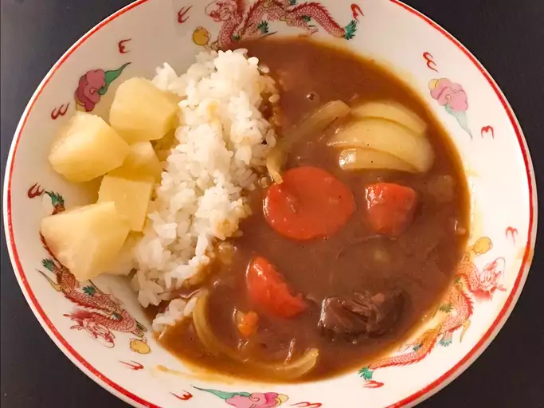

Japanese Curry
Japanese curry is different from Indian or Thai curries.
It is more of a brown stew and it can be mild or spicy, depending on your tastes.
It can be served over white rice or with udon noodles.
This recipe is very flexible; it can easily be made for more or less people.

Ingredients
- 1 tablespoon vegetable oil, or more as needed
- 1 ¾ pounds beef chuck, cut into 2-inch cubes
- 3 onions, quartered
- 1 tablespoon ketchup
- 1 ½ teaspoons Worcestershire sauce
- 1 pinch cayenne pepper, or to taste (Optional)
- water to cover
- 4 carrots, cut into 2-inch pieces
- 1 cube chicken bouillon (Optional)
- 3 medium potatoes, cut into 3-inch chunks
- 1 ½ (3.5 ounce) containers Japanese curry roux, or more to taste
Directions
- Heat oil in a 6-quart pot over medium-high heat. Add beef and saute until brown, 5 to 7 minutes. Add onions and cook until starting to soften, about 3 minutes. Add ketchup and Worcestershire sauce. Stir to coat. Add cayenne pepper. Pour in water to cover mixture by 1 or 2 inches. Add carrots and bouillon.
- Simmer, skimming fat off the surface of the broth as needed, for 30 minutes. Add potatoes. Stir in 1 package of curry roux and let dissolve; add remaining curry as needed to achieve desired thickness. Continue simmering until beef and vegetables are tender, about 30 minutes more.
Back to index